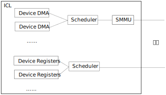

地址空间¶
综述¶
计算机系统总线的上层语义基于地址来提供。地址和针对这个地址的读写是总线访问指令 的参数，同一组读写指令的所有可选地址，构成地址空间。
服务器系统的地址空间非常复杂，有IO地址，内存地址，物理地址，虚拟地址等种种区别。 本小节我们通过鲲鹏920上涉及的各种地址空间来了解地址空间的设计。
MMIO¶
早期的计算机由于设备相对内存都是低速设备，通常内存和设备使用不同的总线和CPU连接 。所以，访问设备和访问内存有不同的指令，从指令上发出的地址，构成两个互相独立的 地址空间。
但随着技术的发展，这种分离已经逐渐变得没有必要了。现代的很多处理器都取消了独立 的IO空间，而把IO空间合并到内存地址空间，把两个地址空间合并成一个。这种技术，为 了区别于过去的分离的IO空间设计，称为MMIO。
MMIOMemory Mapped Input/Ouput。MMIO是为了区分把内存和IO访问分离的技术而建立的概念。它表示内存和IO是在一个地址空间中编址的一种总线地址应用方式。
前面我们已经看到了，鲲鹏920的内存控制器和普通的设备使用相同的总线相连，所以很自 然，它也采用MMIO访问所有的设备。
设备和内存有所不同，设备的每个地址的行为是不同的，读写一个设备的地址，可以引起 这个设备物理上发生变化（比如点亮一盏灯），也可以引起这个设备数字状态的一个改变。 而内存的每个地址的行为基本上是完全一样的。
鲲鹏920把设备组织成一个个独立的IO Cluster，简称ICL，ICL内部的结构是这样的：

每个ICL连着总线的一个Station，Station收到本Station的数据，把总线的地址也发给调 度器，调度器根据本Station的偏移，调度给每个具体的设备。调度器的工作是AMBA AXI协 议的一部分，兼容AMBA的设备都可以和调度器进行交互。
而内存的读写，则通过和DDRC所在的Station，仍按AMBA的内存访问协议要求进行读写即可。
物理地址空间¶
这样，我们在总线上，就可以构成一个统一的地址空间了，这个空间我们称为物理地址空 间。
鲲鹏在每个Station上设计了一个称为DAW（Danymic Address Window）的设施，在系统初 始化的时候，通过一个内部的协议，让BIOS给每个Station设置一个Node ID和地址范围， 这样，任何一个物理地址，都可以映射给某个特定的Station，消息到了Station中，就由 Station后面的AXI Scheduler或者DDRC进行消息处理了。
DAW不但决定了某个物理地址的请求需要发给哪个Station，同时也控制了如何发出去。如 果DAW判断某个物理地址请求是个设备，它就会按设备的要求来发送请求，如果它发现这个 物理地址是个内存，它就会按内存的要求来发送请求。内存交织也通过DAW的相关设施来完 成。
鲲鹏使用ARMv8构架的CPU设计，这个CPU的实现代号泰山。泰山核兼容ARMv8。ARMv8定义了 安全模式，这要求总线地址上还包含一个安全属性，所以，实际上鲲鹏920有两个物理地址 空间，如果CPU核工作在安全模式，它发出的地址按安全物理地址空间来解释，如果它工作 在非安全模式，它发出的地址按安全物理地址空间来解释。鲲鹏的安全物理地址空间是和 单板的物理实现相关的，进行安全编程的工程师需要向硬件提供商获取这个信息。
虚拟地址空间¶
MMU和IOMMU¶
ARMv8通过读写指令发出地址，但现代服务器处理器基本上都不会把这个地址作为物理地址 发出去。这种地址都需要经过翻译。这通常出于如下考虑：
- 安全的需要。现代服务器需要给不同的角色赋予不同的权限，就需要给不同的软件实体 赋予不同的权限，那么控制不同的地址空间对不同的角色不同的访问权限，就成为基本 的要求了。
- 虚拟分层的需要。在例如进程、虚拟机这样的层次，系统软件需要为被虚拟的软件模拟 一个“看似”真实的地址空间，这也需要对目标地址进行转换。
- 地址空间扩展的需要。部分低端的设备，地址总线的长度不如系统总线，无法访问系统 总线上的部分设备，地址翻译服务器可以扩展这个地址，让这些设备的地址范围可以提 升。
鲲鹏通过MMU和IOMMU单元提供地址翻译服务。其结构示意如下：

鲲鹏MMU和IOMMU服务
鲲鹏920兼容ARMv8架构，其MMU使用ARMv8 MMU标准，而IOMMU使用ARM SMMUv4标准。
页式地址翻译¶
地址翻译本质上是这样一个翻译函数：
其中va表示CPU发出的地址，iova表示设备发出的地址，pa表示总线收到的地址， attributes是这个请求地址要求。MMU和IOMMU中必须还有支持这个翻译的控制数据。
AddressTranslate()函数控制了定义域和值域，当va不在允许范围内，MMU或者SMMU可以 报错，这样它就兼有了安全保护的功能了。
AddressTranslation()函数可以有很多设计方法，比如段式地址翻译，我们可以指定一个 段寄存器，给定段的首地址（和地址范围），每次都给va加上一个地址头，这样就可以完 成一个翻译。图示如下：
这种方法也能实现多进程控制，只要每次切换进程的时候更改一下段寄存器就可以指向物 理地址的另一个位置了。但很明显，它不是太灵活，因为物理地址必须整段整段地使用， 很容易产生碎片，对于每次都是固定的几个进程的嵌入式应用还可以接受，对于灵活的服 务器就没法接受了。
服务器更多使用的是页式算法，这也可以图示如下：
其实两个算法并没有本质的区别，都是把单个的地址表述变成一段地址描述。大一点的， 大小可以变化的叫段，小一点的，大小相对统一的叫页。只是一个度的差别。
但在工程上，度的差别就是质的差别。段的数量少，可以用几个CPU的内部寄存器表示，页 的数量多，页表就没法再用内部寄存器表示了。这样，我们不得不把页表放到内存中。这 就形成一个循环了：为了范围一个内存的内容，我们需要访问页表，但为了访问页表，我 们必须访问内存。
解决这个问题的方法是Cache。MMU和IOMMU专用的Cache，这称为TLB，Translation Lookaside Buffer。简单说，就是MMU或者IOMMU为了访问内存需要查页表，查完了页表， 页表的内容就放在TLB中，TLB中有的页表，MMU或者IOMMU可以直接使用，用于得到地址翻 译的目标。
所以MMU和IOMMU翻译都有Fast Path和Slow Path两种路径。Fast Path是TLB中已经有数据 了，直接查表成功，地址翻译直接完成。Slow Path是TLB中没有数据，MMU或者IOMMU首先 去查一次内存中的页表（这称为一次页表的Walk），之后这个问题就成为前一个问题了。
和所有Cache的运作一样，页表Walk有透明的也有不透明的。透明就是硬件自己去做。不透 明的，就是硬件直接报错，让软件自己去填TLB。前者对页表的格式有要求，后者对页表的 格式没有要求，只对TLB的访问接口有要求。鲲鹏920遵循ARMv8的要求，TLB填充是透明的。
最后我们看看页大小的问题。页的大小是个度的问题，页大了可能造成浪费，但省页表， 同时也省TLB。反过来，也小了利用比较充分，但浪费页表和TLB。这完全取决于业务。传 统上Linux都使用4K的页，这成为大部分服务器的标配。但随着内存越来越大，4K不见得是 最优的选择，鲲鹏提供ARMv8可选的全部4K、16K、64K三种也大小。不同的操作系统发行版 使用不同的配置，它们各有优势，取决于用户使用的应用的业务模型是什么样的。
todo：需要一些64K和4K的页配置对比性能数据。
字长和内存访问属性¶
MMU/IOMMU翻译不但输出物理地址，还输出访问属性和访问长度。
从编程的角度，我们可以从两方面来控制CPU或者设备发出的地址请求。其一是发出的地址 的指令指定的字长。ARMv8指令集对不同的字长有不同的访问指令，比如：
- 8位读写 strb, ldrb
- 16位读写 strh, ldrh
- 32/64位读写 str, ldr （取决于操作数的不同会生成不同的指令编码）
- 128位读写 stp, ldp
这些指令只是CPU的期望，当这些请求发到MMU上，MMU要根据地址对其进行解释，再变成物 理地址。下面是一种ARMv8的页表的格式：
ARMv8支持双Stage页表翻译，每个Stage支持多种页表格式，每种页表还支持多种页的大小 。所以这里其实有很多的变体，但其实我们不是那么关心这些实现细节，我们主要还是希 望通过这个实例，让读者对于访存的语义映射为一种硬件的行为的时候，大致会有哪些方 面的细节问题需要被考量有所了解。
这个例子中的MemAttr指明了这个目标地址的内存类型和访问属性，它表示如下选择：
内存：
- MemAttr[1:0]=00 Outter内存
- MemAttr[3:2]=01 Inner或者Outer NonCacheable
- MemAttr[3:2]=10 Outer Write-through Cacheable
- MemAttr[3:2]=11 Outer Write-back Cacheable
- MemAttr[1:0]=01 NonCacheable Outter内存
- MemAttr[1:0]=10 Write-through Cacheable Outter内存
- MemAttr[1:0]=11 Write-back Cacheable Outter内存
设备：
- MemAttr[3:2]=00 设备内存
- MemAttr[1:0]=00 nGnRnE
- MemAttr[1:0]=01 nGnRE
- MemAttr[1:0]=10 nGRE
- MemAttr[1:0]=11 GRE
Cache相关的属性的原理在介绍Cache的时候再来讨论，我们重点先看看设备属性的行为。 ARMv8对设备访问给出了三种属性：
- G，Gatthering，这表示是否允许MMU和总线收集多个请求以后一次发出去
- R，Reordering，这个表示是否允许MMU和总线对同一个通讯目标重排请求的顺序
- E，Write Acknowledgement，这个表示如何认可一个写操作成功了。E表示等写响应消息 回来才是写成功了，nE表示只要发出去就成功了。
地址发出时给出的地址大小和顺序，配合上MMU的属性，才最终决定在地址上看到的请求是 什么。
需要补充的是，地址发出的顺序还和超标量发射有关，这我们在讨论内存顺序的时候在来 讨论这部分逻辑。
虚拟地址空间和多级页表¶
如前所述，虚拟地址空间地址翻译构造了多个独立的地址空间。地址空间是个不清晰的概 念，本节我们来细化一下这个概念。
首先，所有VA可以选择的地址，构成一个VA地址空间。这个从指令上控制出来的。比如：:
ldr r2, [r1, #4]
str r2, [sp, #16]
这样的地址请求，本身就带来地址可以表示范围的假设。鲲鹏使用ARMv8 Aarch64指令空间 ，用一个64位的整数表示地址，这个地址范围就可以达到如下范围：
\[0 .. 2^{64}-1\]
这表达了一个16EB的空间，虽然说地址永远都不嫌多，但至少现在基本上都是浪费的。所 以ARM在这上面进行了各种扩展，比如使能了Address Tagging功能（通过TCR_ELx.TBIy设 置），最高的8位用作这个地址的Tag，可以让软件用来管理管理这个指针的状态等。这样 地址空间减少了8位，但可以表达的空间仍高达64PB。所以，其实这个空间仍然是浪费的， 所以现在实施的页表策略，基本都不会支持用尽64位的VA空间。换句话说，指令可以表达 64或者56位的地址空间，但MMU/IOMMU不一定需要支持对所有这些地址的翻译。ARM标准的 VA默认只有两个48位空间，ARMv8.2开始，通过LVA特性，可以扩展到52位（todo：确认920 是否支持这个特性）。
设备的IO地址受设备的设计左右，如果设备使用了IOMMU，IOMMU会对这个地址进行截断或 者扩展处理，这个和每个设备的具体设计相关，我们在具体讨论每个设备的时候再讨论这 个问题。
上面这个解释的VA地址空间通过MMU/IOMMU的转换变成物理地址，每次把不同转换数据送到 MMU/IOMMU，转化的物理地址都不一样。所以，相同的VA地址空间可以被转化为不同的物理 地址集合，我们把这种指向不同物理地址集合的VA地址空间，有时也称为VA地址空间，在 本文中，如果需要做出这种区分，我们把这种考虑了所指向的物理地址空间的VA地址空间 称为“有效VA地址空间”，而把不考虑这个要素的地址空间称为“通用VA地址空间”。通用VA 地址空间可以很大，但有效VA地址空间可以很小。操作系统可以通过切换不同的有效VA地 址空间，切换不同的进程。
有效VA地址空间这个概念体现了多级页表的存在价值。我们简单研究一下这个问题。
假设我们用一级页表，一个64位的VA，用4K的页，页内偏移占用12位，剩下的52位用于表 示页表，为了让Tran()函数的定义域可以充满整个16EB的空间，那么这个页表得有2的52次 方项才能任意表示64位里的任何一个位置。假定每项64个字节，这个页表很可能比一个有 效VA地址空间本身都大。这在工程上根本无法接受。
其实我们也用不上这么大的空间，假定我们仅仅用其中的48位，页表也有2的36次方项，这 在工程上仍然无法接受。
这样我们就有必要把这个页表分成多级的，比如我们用两级页表，第一级用10位，第二级 26位。如果我们需要的有效地址空间不多，最小的情况下，我们只需要一个一级页表，一 个二级页表就够了，这只需要如下数量的页表项：
\[2^{10} + 2^{26}\]
这是把乘法变成了加法。如果我们再多分几个分段，比如按9, 9, 9, 9来做多级页表， 最小页表空间就可以再降到：
\[2^9 + 2^9 + 2^9 + 2^9\]
设计师一般会尽量让每个页表的大小接近一个页的大小而不会超过，因为用作页表的页大 部分时候也不可能用于其他用途了，物尽其用是最优的选择。
todo：最好用当前Linux kernel的的标准配置，但需要去查一下现在最新的配置是什么。
虚拟地址空间和特权级¶
地址空间是CPU特权级实施权限控制的其中一种方法，给予不同特权级不同的地址空间，就 能给予不同的特权级不同的地址访问权限，切换特权级的地址空间，就能切换那个特权级 的地址范围。
鲲鹏920，遵循ARMv8的定义，在页表项中描述每个页的具体权限（具体在页表的AP域中）， 这些权限不但区分特权级的访问权限，还区分读，写，执行等不同权限。通过ARMv8升级版 本的扩展空间，鲲鹏920不但控制低特权级不能越权访问高特权级的权限，还通过PAN，UAO 一类的功能控制高特权级不能访问低特权级的部分权限。这可以防止高特权级被作为攻击 跳板。
ARMv8定义了两个页表寄存器，TTBR0和TTBR1，[1] ，同时支持两个48位的VA空间（如果 使能ARMv8.2 LVA特性，可以扩展到52位），其意图是一个用于用户进程，一个用户内核。 这样，切换进程的时候，更改其中一个指向的页表就可以了，内核不受任何影响。当然， 这是意图，用户要怎么使用这两个页表，这是用户的事。
| [1] | TTBR在不同特权级下有不同的含义，所以不能简单理解为两个寄存器，实际上有很 多个寄存器。 |
在主线5.5的Linux Kernel的实现中，默认采用ARMv8暗示的这种地址空间布局。按这种布 局，0 - 0x ffff ffff ffff 用于用户空间，使用TTBR0，0x ffff 0000 0000 0000 到 0xffff ffff ffff ffff用于内核空间，使用TTBR1。这样，在某个特定的时刻，某个CPU上 的地址空间是这样的：
每个CPU有自己独立的有效VA地址空间，但它们的有效内核地址空间是一样的。
CPU每次切换地址空间，就更改TTBR，但仅仅更改TTBR是不够的，因为TLB里面还有上一个 进程的页表缓存。这个地方可以做成“透明”的，但这并不高效。所以ARMv8的定义中，这个 地方不是透明的，它需要CPU主动做TLB Flush操作，刷新TLB的内容。
但每次切换进程都要刷新TLB操作，这个成本也不低，特别是对于微内核操作系统那种有大 量进程间通讯的系统，这几乎无法接受。所以这里加入一个很多通用处理器都会用的优化 ：每个TLB的条目录被加载到MMU/SMMU里面后，带一个进程的ID，称为ASID，地址翻译不但 要匹配上VA，还要匹配上ASID，才能进行翻译。这样TLB中可以存在多个进程的页表项，在 一定程度上就降低了进程切换的成本。
ASIDtodo
ARMv8的ASID可以实现成8位或者16位的，鲲鹏实现为16位（todo：和手册对一下），但这 和操作系统使用的进程ID（比如Linux Kernel的PID）常常还是不一样的，这也制造了实现 上的麻烦，两者还需要有映射和冲突管理算法。但工程常常就是如此了。
IOMMU页表¶
进程切换通过切换CPU MMU的页表实现，同样的策略却不能用于IOMMU。
IOMMU有两种情形，一种是仅内核要共享数据给设备，另一种是用户态程序要共享数据给设 备。
第一种情形通常发生在内核驱动的场景。比如一个网卡在内存中放了一个要发送的报文， 它把地址告知设备，设备通过这个地址发出去。在很早的时候，不少服务器系统都没有 IOMMU，这需要把这个地址转化为物理地址，设备直接在总线上发出物理地址就可以了。
这种方式有很多问题，包括：
简单设备的物理地址总线可能很短，比如它只有16位，这样很多内存都访问不了。所以 Linux的内核中还保留着DMA_ZONE和Bounce Buffer这样的设计，对这种设备做DMA，只 能从特定的物理地址空间中分配，如果不是从这里分配的内存要做DMA，就要先拷贝到 这样的内存中才能做，这种用作跳板的内存就叫Bounce Buffer。这些行为，不但影响 灵活性，也影响效率。
物理地址分配容易产生碎片，地址常常不连续。所以Scatter-Gather DMA成了这种不少 设备的标配，这种配置增加了软硬件的实现成本和复杂度。
Scatter-Gather DMAtodo不安全。硬件可以发出任何物理地址，也就意味着攻击者可以通过插入一个恶意的设备 读取或者修改内存中的任何数据，这样所有的安全措施都被解锁了。考虑现在很多设备 都可以动态插入USB一类的动态接口，这个问题就可以很大了。todo：放一两个实际案例的例子。
所以，现代的服务器中，IOMMU是标配，否则安全这一关就过不去。基于IOMMU，每次CPU给 设备发送数据的时候，在IOMMU的页表中找一个空闲的va空间（称为iova），映射到它的物 理地址，然后才通知设备访问这个iova，这样才是安全的。
但这只适合内核驱动，因为内核只有一个，也只需要一个页表。但如果是用户态的进程需 要和设备通讯，这样就不行了。CPU进程切换可以切换页表，但CPU进程切换了，设备不可 能也切换页表。
所以IOMMU都需要支持多进程。ARM SMMU规范定义的IOMMU页表第一级称为一个Context Desciptor表，每个Descriptor对应一个MMU意义上的页表。这样，一个SMMU单元，可以有 多张页表，这样才能保证IOMMU可以正常工作。但这样也给TLB带来更大的负担。
Linux Kernel通过VFIO提供用户态DMA接口，我们在讨论计算子系统WarpDrive结构的时候 再来深入探讨这里的问题。用户态的缺页问题也讲在哪里讨论。
IOMMU的No-Strict模式问题¶
基于IOMMU做设备的DMA，在实际中最大的一个成本常常是unmap_dma()操作。下面是一个 hns3的性能profile报告：
todo：需要一个hns3没有开no-strict的性能数据
UNMAP本身其实没有什么功能，但在硬件上，要完整这个工作，就要在IOMMU的TLB把对应的 映射条目挑出来，然后一个个删掉，这要等IOMMU完成了，才能继续做下一个操作。
其实不等也是可以的，在功能上不会有什么问题，但确实破坏承诺，造成一定程度上的不 安全。因为你一波操作处理完成了，你的内存准备用于其他功能了，不断开设备的访问权 限，这个设备可能通过这一个小小的时间窗口窥探你的数据。但它能否利用这个时间窗口 是存疑的。
鲲鹏在主线Linux中合入了一个称为No-strict的特性：(todo：版本，配置项），把unmap 做成异步的，这可以大大提高性能，下面是开启了no-strict的数据：
todo：no-strict的数据
软件和硬件都在优化这里的性能，最终哪个会占上风，我们还不知道，这也是工程的特点。 WarpDrive改变整个应用模式，也能为解决这个问题提供帮助。
IOMMU的局部性问题¶
todo：IOMMU的stream模式对IOMMU翻译性能的影响。
软件行为¶
我们配合软件实现看看这个过程如何起作用。在5.5主线的Linux Kernel的实现中，我们可 以看到操作系统访问鲲鹏时默认选择的属性：
这是设备的映射：
//arch/arm64/include/asm/io.h
#define ioremap(addr, size) __ioremap((addr), (size), __pgprot(PROT_DEVICE_nGnRE))
#define ioremap_wc(addr, size) __ioremap((addr), (size), __pgprot(PROT_NORMAL_NC))
这是内存的映射：
// arch/arm64/mm/proc.S
ldr x5, =MAIR(0x00, MT_DEVICE_nGnRnE) | \
MAIR(0x04, MT_DEVICE_nGnRE) | \
MAIR(0x0c, MT_DEVICE_GRE) | \
MAIR(0x44, MT_NORMAL_NC) | \
MAIR(0xff, MT_NORMAL) | \
MAIR(0xbb, MT_NORMAL_WT)
msr mair_el1, x5
// arch/arm64/include/asm/pgtable-prot.h
#define PROT_NORMAL (PROT_DEFAULT | PTE_PXN | PTE_UXN | PTE_WRITE | PTE_ATTRINDX(MT_NORMAL))
如果部分程序不接受这个默认选择，需要使用不同的映射属性来映射虚拟地址。如果访问 设备的时候有长度需求，Linux封装了不同接口函数进行处理。
这个地方用的页表格式和我们前面举的例子用的那个不太一样，它的内存属性不是直接放 在页表项中的，而是页表项放一个索引，内容放在寄存器MAIR中，这里MT_NORMAL是5，所 以其实索引了NORMAL_WT的配置，但最终逻辑都是一样的。
要控制访问的大小，Linux也封装成了具体的函数：
//arch/arm64/include/asm/io.h
#define __raw_writeb __raw_writeb
static inline void __raw_writeb(u8 val, volatile void __iomem *addr)
{
asm volatile("strb %w0, [%1]" : : "rZ" (val), "r" (addr));
}
#define __raw_writew __raw_writew
static inline void __raw_writew(u16 val, volatile void __iomem *addr)
{
asm volatile("strh %w0, [%1]" : : "rZ" (val), "r" (addr));
}
#define __raw_writel __raw_writel
static inline void __raw_writel(u32 val, volatile void __iomem *addr)
{
asm volatile("str %w0, [%1]" : : "rZ" (val), "r" (addr));
}
#define __raw_writeq __raw_writeq
static inline void __raw_writeq(u64 val, volatile void __iomem *addr)
{
asm volatile("str %x0, [%1]" : : "rZ" (val), "r" (addr));
}
#define __raw_readb __raw_readb
static inline u8 __raw_readb(const volatile void __iomem *addr)
{
u8 val;
asm volatile(ALTERNATIVE("ldrb %w0, [%1]",
"ldarb %w0, [%1]",
ARM64_WORKAROUND_DEVICE_LOAD_ACQUIRE)
: "=r" (val) : "r" (addr));
return val;
}
#define __raw_readw __raw_readw
static inline u16 __raw_readw(const volatile void __iomem *addr)
{
u16 val;
asm volatile(ALTERNATIVE("ldrh %w0, [%1]",
"ldarh %w0, [%1]",
ARM64_WORKAROUND_DEVICE_LOAD_ACQUIRE)
: "=r" (val) : "r" (addr));
return val;
}
#define __raw_readl __raw_readl
static inline u32 __raw_readl(const volatile void __iomem *addr)
{
u32 val;
asm volatile(ALTERNATIVE("ldr %w0, [%1]",
"ldar %w0, [%1]",
ARM64_WORKAROUND_DEVICE_LOAD_ACQUIRE)
: "=r" (val) : "r" (addr));
return val;
}
#define __raw_readq __raw_readq
static inline u64 __raw_readq(const volatile void __iomem *addr)
{
u64 val;
asm volatile(ALTERNATIVE("ldr %0, [%1]",
"ldar %0, [%1]",
ARM64_WORKAROUND_DEVICE_LOAD_ACQUIRE)
: "=r" (val) : "r" (addr));
return val;
}
Linux没有考虑对128长度的封装，有些请求是要求一次发出128位的地址的，比如下面是鲲 鹏920的加速器设备设置邮箱命令的方法，它强行使用128位的访问，如果分开成两次64位 访问，就会出错：
// drivers/crypto/hisilicon/qm.c
static void qm_mb_write(struct hisi_qm *qm, const void *src)
{
void __iomem *fun_base = qm->io_base + QM_MB_CMD_SEND_BASE;
unsigned long tmp0 = 0, tmp1 = 0;
if (!IS_ENABLED(CONFIG_ARM64)) {
memcpy_toio(fun_base, src, 16);
wmb();
return;
}
asm volatile("ldp %0, %1, %3\n"
"stp %0, %1, %2\n"
"dsb sy\n"
: "=&r" (tmp0),
"=&r" (tmp1),
"+Q" (*((char __iomem *)fun_base))
: "Q" (*((char *)src))
: "memory");
}
虚拟化和多Stage翻译¶
todo：到此为止，我们一直聚焦在讨论没有虚拟机的情形